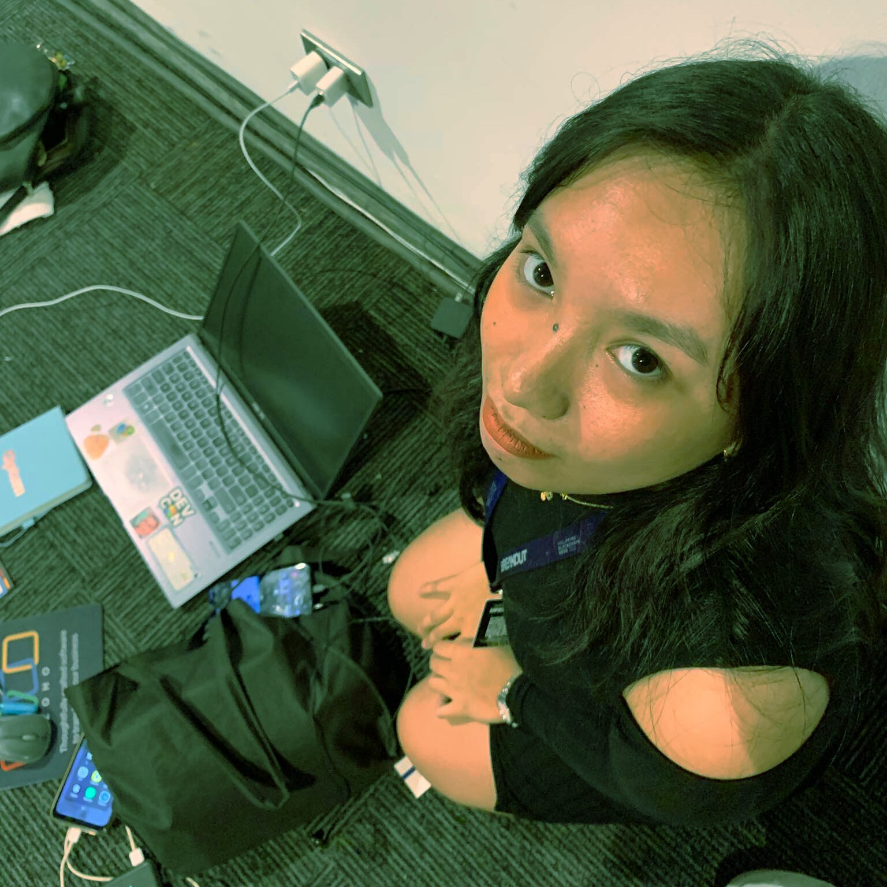

Hello, and welcome, AGENT 666

Name: Maryrose Pergis
Age: 20
Species: Human
Codename: MR (em-ar)
Alias: Marot, Carrot, Kali, Mallows
Institution: Asia Pacific College
Course: BS Computer Science Specializing in Cybersecurity and Forensics
Test